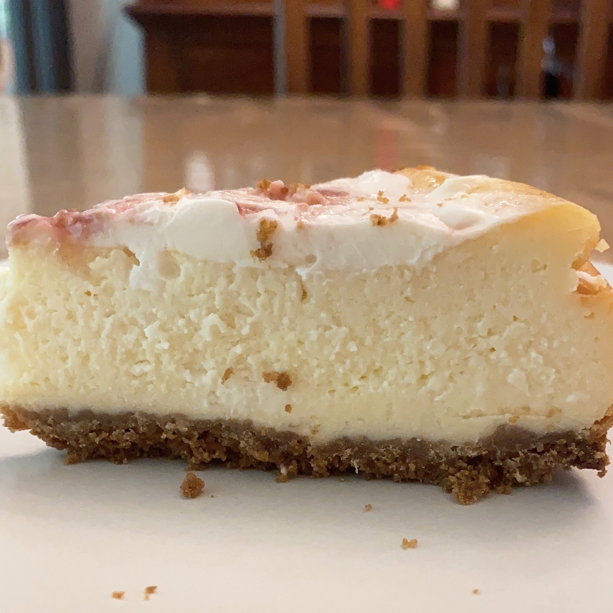

Classic Cheesecake with Strawberry Sour Cream Frosting

Ingredients
- 1 3/4 cup graham crackers
- 1 tbsp sugar
- 5 tbsp melted butter
-
- 4 packs (8oz) cream cheese
- 2 (try 1) cups sugar
- 1/2 cup heavy cream
- 2 cups sour cream
- 5 tbsp flour
- 3 pinches of salt
- 1 vanilla bean
- 4 (try 3) eggs
-
- 2 cups sour cream
- 2 tbsp sugar
- 1 tbsp vanilla
Directions
- Begin with the crust by crushing the graham crackers with sugar and melted butter.
- use a flat item to even the crust into the pan (butter the pan and line with parchment paper around+below)
- Bake 8-10 minutes at 350F until golden brown, let cool.
- To make the cheesecake, beat cream cheese with sugar until well combined. Mix in heavy cream
- Mix in sour cream, flour, vanilla, and salt.
- Beat in ONE egg at a time. Once well combined, STOP mixing.
- Pour the mixture over the cooled crust. In a water bath, bake for 1 hour at 350F. Leave it in the closed oven for another hour.
- For the sour cream topping layer, mix together the sour cream, sugar, and vanilla.
- Spread it over the cheesecake and bake for 10-15 minutes at 350F (no water bath).
- Leave in the closed oven for 1 hour and let cool. Plastic wrap the cheesecake and let it rest overnight (at least 4 hours).